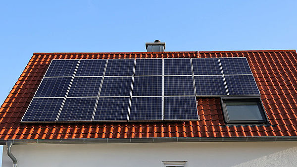
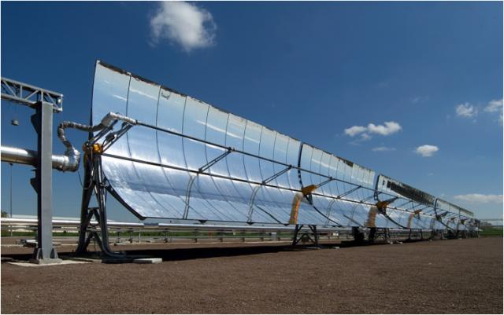

L’energia solare è la forma di energia alla base di tutte le fonti energetiche della Terra da cui ottenere la produzione di energia termica ed elettrica tramite lo
sfruttamento dei raggi del sole.
Utilizzata per la produzione di calore e di energia elettrica per alimentare diverse tipologie di impianti, quella solare è un tipo di
energia alternativa ai combustibili fossili, rinnovabile e pulita e dunque a basso impatto ambientale.
Energia rinnovabile:
Energia Solare
Energia solare: applicazioni e principali tecnologie
L’energia solare può essere utilizzata per generare calore e produrre acqua calda oppure per produrre elettricità, nel primo caso di parla di impianti fotovoltaici mentre nel secondo si tratta di solare termico.
Le principali tecnologie rinnovabili che consentono di sfruttare l’energia proveniente dai raggi solari sono: il panello solare termico, il pannello fotovoltaico, il pannello solare a concentrazione.
Ecco quali sono le principali caratteristiche di ognuno e come funzionano per produrre energia.
Solare termico
Il pannello solare termico è la tecnologia che sfrutta i raggi del sole per riscaldare l’acqua sanitaria contenuta al suo interno in uno speciale serbatoio di accumulo.
Questo sistema funziona tramite collettore solare, caratterizzato da materiale isolante che evita il surriscaldamento delle sue componenti.
I collettori solari termici possono differenziarsi in due tipologie: a circolazione naturale e forzata.
Nel primo caso i serbatoi di accumulo che contengono lo scambiatore di calore si trovano al di sopra dei pannelli di calore dove circola il liquido, mentre nel secondo caso si utilizza una pompa al fine di far circolare il fluido nello scambiatore e nel pannello, mentre il serbatoio si trova più in basso dei pannelli.
L’uso del solare termico per produrre energia indispensabile al riscaldamento e raffreddamento dei dispositivi permette una netta riduzione dell’uso degli impianti di condizionamento e di riscaldamento degli ambienti, diminuendo la dipendenza dai combustibili fossili a vantaggio dell’ambiente.
Solare fotovoltaico
Il pannello fotovoltaico sfrutta le radiazioni solari per produrre energia elettrica attraverso alcuni elementi semiconduttori sollecitati dalla luce.
Entrando più nei dettagli, si tratta di celle fotovoltaiche costituite da silicio che permettono di convertire la luce solare in energia elettrica.
La conversione avviene attraverso gli elettroni, che, quando la luce colpisce i materiali semiconduttori, vengono incanalati e producono, così, corrente elettrica.
Per quanto questa tipologia di impianto a energia solare non funzioni in modo continuo ma soltanto nelle ore in cui la luce del sole può essere sfruttata, è in grado di sopperire al fabbisogno di serbatoi montani e zone isolate grazie ad una produzione elevata.
Solare a concentrazione
L’impianto solare a concentrazione sfrutta alcuni specchi parabolici per produrre elettricità dai raggi solari e fornire calore a temperature elevate.
Attraverso i pannelli solari a concentrazione, questi impianti concentrano tutta l’energia su un tubo ricevitore contenente il fluido termovettore che la trasferisce in turbine a vapore per convertirla in energia elettrica.
Oltre al sistema degli specchi parabolici, detto a concentrazione puntiforme (il più utilizzato), il solare a concentrazione si può servire di specchi piani posizionati a terra attraverso cui convogliare i raggi solari verso la sommità di una torre (sistema a torre centrale).
L’impianto solare a concentrazione può anche essere a parabole lineari ossia formato da tubi a parabola, dunque privi di copertura, il cui ruolo è ancora una volta quello di riscaldare il fluido contenuto nelle tubazioni.

Pannello solare termico

Pannello fotovoltaico

Pannello solare a concentrazione